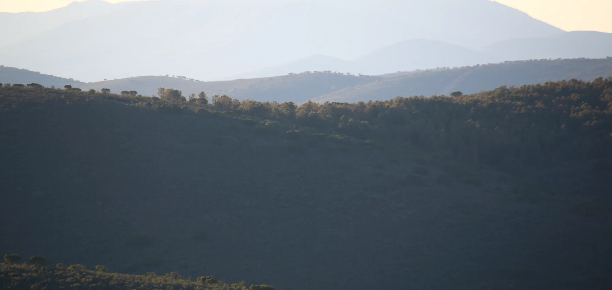
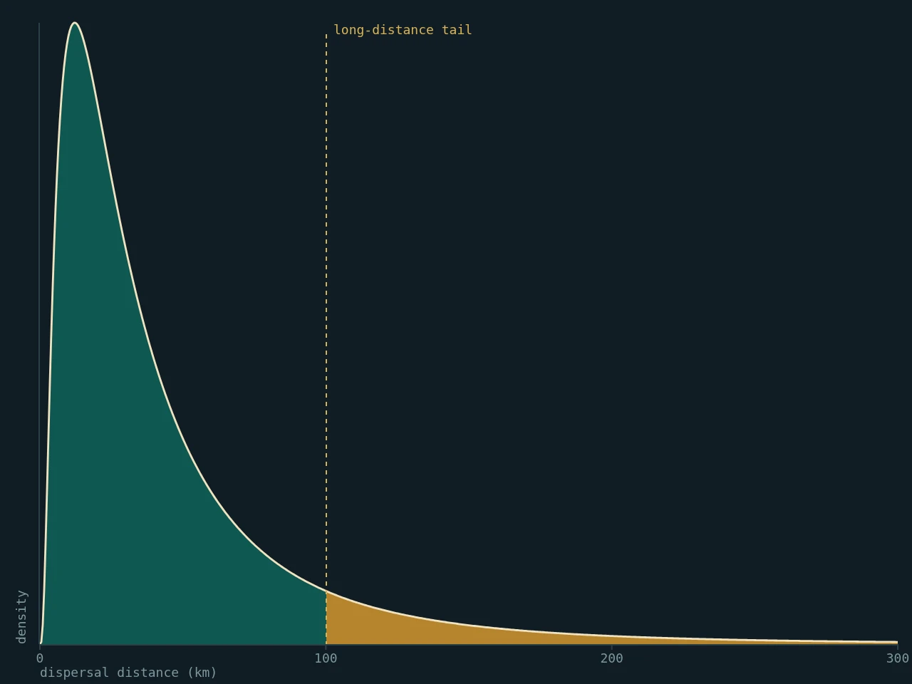
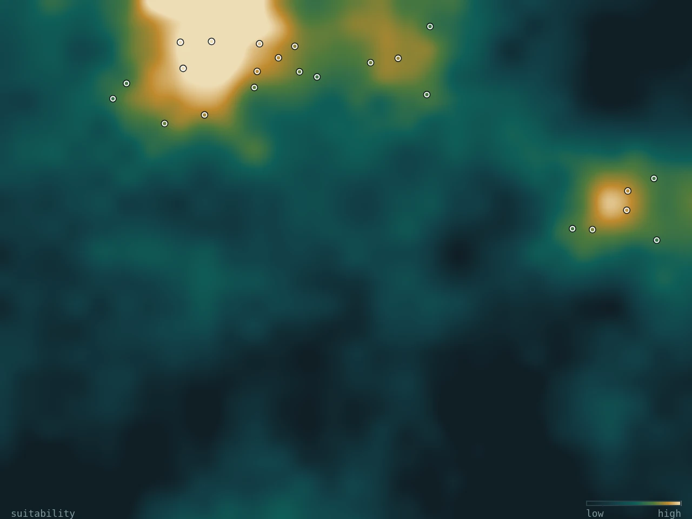
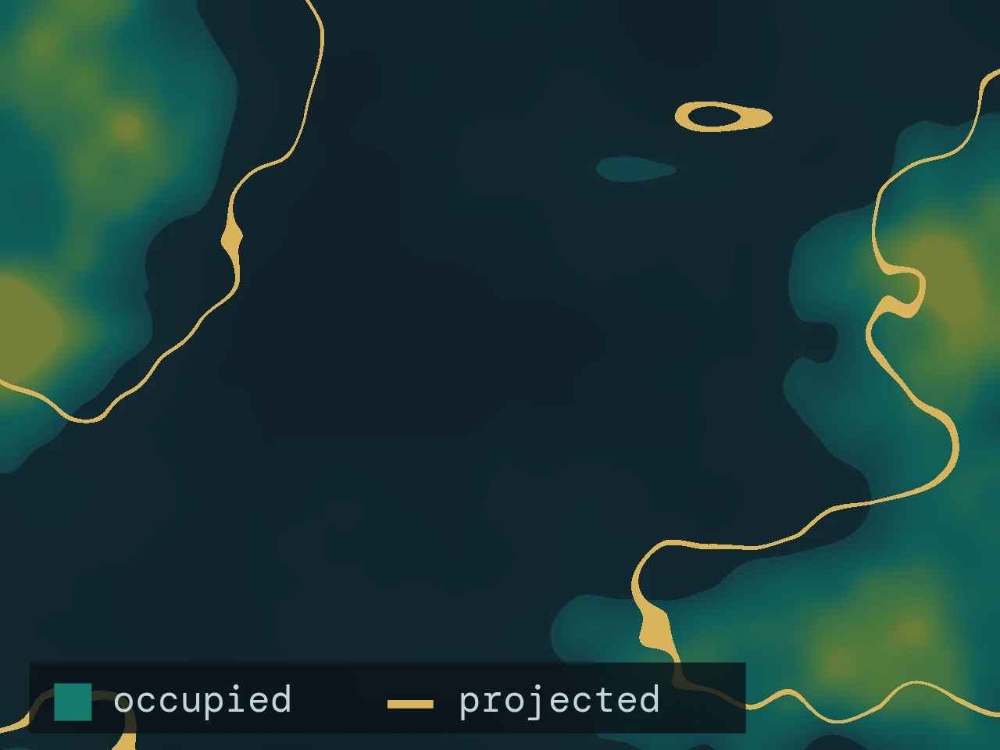
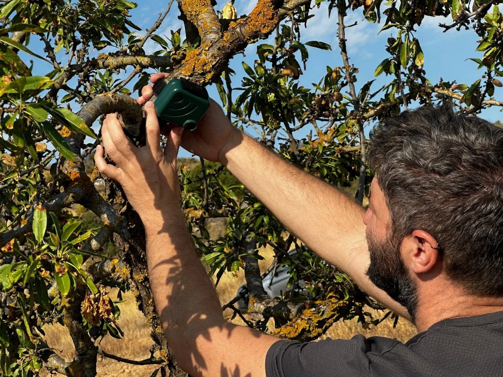

Guillermo Fandos
Dept. Biodiversidad, Ecología y Evolución · Universidad Complutense de Madrid
Guillermo Fandos
Quantitative ecologist · Assistant Professor
Understanding where species live, how they move, and how that is changing.
I study the processes that shape the distribution and abundance of animal populations, combining fieldwork, large-scale data synthesis and statistical modelling to address questions in biogeography, movement ecology and conservation.


Research
Understanding and forecasting where species live, and how that is changing
Themes Movement ecology
Biogeography
Movement and the geography of species
Animals move at every scale, from a morning’s foraging to a lifetime’s dispersal, and those movements set where populations persist, how connected they are and how fast ranges can shift. I study how individual movement scales up to population and range dynamics, and why individuals of the same species differ so much in how far they go.

Themes Statistical ecology
Species distribution modelling
Biodiversity modelling and forecasting
Most models of species distributions describe where a species is found, not the processes that put it there. I develop models that carry ecological process explicitly — dispersal, population dynamics, species interactions, imperfect detection — and that integrate heterogeneous data, so that forecasts of biodiversity change rest on mechanism rather than correlation.

Themes Conservation biology
Global change
Conservation under global change
Habitat loss and climate change are redrawing species distributions. I work on anticipating which species are most exposed and why, and on turning that understanding into spatial priorities: where and when problems will emerge, and where intervention is most likely to matter.

Themes Ecological monitoring
Emerging technologies
Monitoring biodiversity at scale
Good inference needs good observation. I work on how autonomous sensors, citizen science and long-term surveys can be designed and combined to monitor wildlife at the scales that conservation decisions require, and on the analytical pipelines that turn raw observations into evidence.

Projects
Funded work in progress
INTRADISP
Why individuals of one species disperse differently
Synthesising intraspecific dispersal variation using European bird ringing data to improve predictions of biodiversity responses to global change.
RIMed-Fauna
Wildlife in Mediterranean rivers
Mediterranean rivers flood in winter and run dry in summer. Camera trapping and distribution modelling in National Parks to see how terrestrial wildlife copes with that variability.
SHAREPOINT
Selected publications
2026 Dispersal
Dispersal syndromes across the tree of life
Fandos G, Robinson RA, Zurell D · Communications Biology
2023 Dispersal
Fandos G, Talluto M, Fiedler W, Robinson RA, Thorup K, Zurell D · Journal of Animal Ecology 92: 158–170
2023 Conservation
Pratzer M, Nill L, Kuemmerle T, Zurell D, Fandos G · Diversity and Distributions 29: 75–88
2021 Conservation
Romero-Muñoz A, Fandos G, Benítez-López A, Kuemmerle T · Global Change Biology 27: 755–767
2020 Movement
Seasonal niche tracking of climate emerges at the population level in a migratory bird
Fandos G, Rotics S, Sapir N, Fiedler W, Kaatz M, Wikelski M, Nathan R, Zurell D · Proceedings of the Royal Society B 287: 20201799
2020 Methods
A standard protocol for reporting species distribution models
Zurell D, Franklin J, König C, …, Fandos G, …, Merow C · Ecography 43: 1261–1277
News
Feb 2026
New paper in Communications Biology: Dispersal syndromes across the tree of life (Fandos et al. 2026).
Feb 2026
In Vienna for the EUFLYNET COST Action meeting on bird migration research.
2025
Welcome to David Notario and Claudia Mediavilla, joining as researchers on INTRADISP and RIMed-Fauna.
Photographs
Portrait: Guillermo Fandos, PhD in Ecology 2017, Universidad Complutense de Madrid. · Landscape: Sierras de Cabañeros, Parque Nacional de Cabañeros — photo FrDr, CC BY-SA 4.0, via Wikimedia Commons. · Field: deploying an AudioMoth acoustic recorder on an almond tree, photo Guillermo Fandos. · Research figures marked Schematic are generated illustrations, not fitted to data.
{kind=link}
Social organisation and parasite sharing
Rainforest understory birds in French Guiana: field-based research combining network analysis with disease ecology.